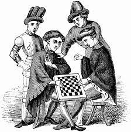
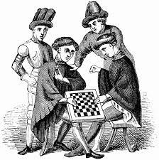

back
back
Descrizione
La Dama è uno dei giochi da tavolo più popolari al mondo, apprezzato per la sua semplicità e profondità strategica.
Conosciuta anche come "Checkers" in inglese e "Damas" in spagnolo, la Dama ha radici antiche che risalgono a migliaia di anni fa.
Questo gioco, giocato su una scacchiera, coinvolge due giocatori che cercano di catturare le pedine avversarie spostandosi diagonalmente su caselle alternate.
Origini e Storia
Le origini esatte della Dama sono incerte, ma si ritiene che il gioco abbia avuto origine in antiche civiltà come l'Egitto o la Mesopotamia.
È stato giocato in varie forme in tutto il mondo, assumendo caratteristiche uniche nelle diverse culture.
Nel corso dei secoli, la Dama è diventata un passatempo popolare in molte nazioni, con regole standardizzate che ne hanno facilitato la diffusione e la comprensione.
La Dama si gioca su una scacchiera quadrata divisa in 64 caselle, con 32 pedine disposte inizialmente sulle caselle scure.
 

Ogni giocatore controlla le pedine dello stesso colore e l'obiettivo è catturare tutte le pedine avversarie o impedirgli di muoversi.
Le pedine possono muoversi solo in avanti e diagonalmente, e possono catturare le pedine avversarie saltandole.
Nel corso degli anni, sono state sviluppate molte varianti della Dama, ciascuna con regole e caratteristiche uniche.
Alcune varianti aggiungono nuove pedine o regole speciali, mentre altre modificano la disposizione della scacchiera.
Sebbene la Dama possa sembrare un gioco semplice, richiede una strategia sofisticata per vincere.
I giocatori devono bilanciare l'offensiva e la difesa, cercando di anticipare le mosse dell'avversario e creare opportunità per catturare le sue pedine.
Ci sono diverse tattiche e strategie avanzate, come la forzatura e la creazione di strutture difensive solide, che possono essere utilizzate per ottenere un vantaggio sul nemico.
La Dama è stata oggetto di competizioni a livello locale, nazionale e internazionale.
Ci sono tornei regolari in molti paesi, dove i giocatori possono mettere alla prova le proprie abilità e competere per ottenere premi e riconoscimenti.
I campionati mondiali attirano alcuni dei migliori giocatori del mondo, che si sfidano per il titolo di campione mondiale di Dama.
In conclusione, la Dama è un gioco senza tempo che continua ad affascinare e coinvolgere giocatori di tutte le età. La sua semplicità apparente nasconde una profondità strategica che offre sfide e soddisfazioni a chiunque lo giochi.
Con una storia ricca e una presenza globale, la Dama rimane uno dei giochi da tavolo più amati e giocati al mondo.
per chi unque volgia provare a giocare clicca qui.